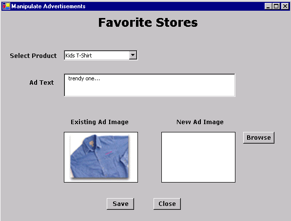

Manipulate Advertisements Sample - DML Operations for LOB Columns Through ODP.NET Using C#
Table of Contents
- Objective of the Sample Application
- Overview of the Sample Application
- User Notes with Screen Shots
- Required Software
- Extracting the Sample
- Database Setup
- Preparing and Running the sample
- Description of Sample Files
Objective of the Sample Application |
Back To Top |
The purpose of this sample application is to demonstrate:
1. How to perform DML operations on DataSet for LOB (Large Objects) columns like
images, sound files etc.through ODP.NET using C#?
2. How to fetch BLOB data using OracleBLOB (ODP.NET type) and OracleDataReader through ODP.NET using
C# ?
Overview of the Sample Application |
Back To Top |
ODP.NET offers faster and reliable access to
Oracle Database by using Oracle Native APIs. ODP.NET provides
features to access any .NET application. The data access
through ODP.NET can be done using a collection of classes
contained in Oracle.ManagedDataAccess assembly. Figure 1.1 describes how data is accessed using
ODP.NET.

Figure 1.1: Accessing
Data Using ODP.NET
DataSet is a
major component of ADO.NET. It is an in-memory cache of the
data retrieved from the database. OracleDataAdapter
represents a set of data commands and a database connection
that is used to fill the DataSet based on
the query given. OracleCommand
represents SQL statements to execute against datasource. OracleConnection is used to build the database
connection.
OracleDataReader
is a read-only, forward-only recordset. ExecuteReader method of OracleCommand is used to create OracleDataReader. OracleBLOB
is an OracleType specific to ODP.NET for accessing BLOB data from Oracle
databases.
This sample is used to create/update/view
advertisements for products. When this sample is run, a drop
down list populated with products is displayed.The user can
select a product from the list for which he/she wishes to
create/update the advertisement. The user can create a
new advertisement or update an existing one by entering advertisement
text in the text box and selecting image from the file-dialog, by
clicking the 'Browse' button. 'Save' button can be clicked to
commit changes and 'Close' button can be clicked to exit out
of the application. Creating and updating advertisements
demonstrates DML operations on DataSet for
LOB data through Oracle Data Provider for .NET. Viewing advertisements
demonstrates fetching BLOB (LOB) data using OracleBLOB
(ODP.NET type).
User Notes with Screen Shots |
Back To Top |
When this sample application is run, a list of products populated from database is displayed. If the advertisement text and image already exists for the selected product then advertisement text and image is displayed as shown in figure 1.2

Figure 1.2 Screen Shot for Manipulate
Advertisement Sample Initial Screen
To insert/update an advertisement for a product selected from the list, the user can enter the value of Advertisement text. To select an image for the advertisement, the user can click on 'Browse' button. A file dialog is displayed as shown in figure 1.3.

Figure 1.3 Screen Shot displaying File
Dialog Box For Image
The selected image appears in the 'New
Ad Image' picture box as shown in figure
1.4 . The user can
commit the changes by clicking the 'Save' button.

Figure 1.4 Screen Shot After Selecting
Image From File Dialog Box
The user can click on 'Close' button to exit from the application.
Required Software |
Back To Top |
-
Visual C# installed with Visual Studio 2005/2008/2010/2012
-
Oracle11g Database or higher running SQL*Net TCP/IP listener (can be downloaded here )
-
Oracle Data Provider for .NET (ODP.NET) (can be downloaded here )
Extracting the Sample |
Back To Top |
Unzip DSDRwithLOB.zip
using Winzip or command utility to your convenient directory referred to as <Extract_Dir>. Extraction of the zip file
results in the creation of 'DSDRwithLOB'
directory. Refer Description of Sample Files section
for more details.
Database Setup |
Back To Top |
Connect to your database as any user and
run the script <Extract_Dir>\DSDRwithLOB\Setup\DatabaseSetup.sql at the SQL prompt
SQL>
@<Extract_Dir>\DSDRwithLOB\Setup\DatabaseSetup.sql
This script will prompt for the username, password and connectstring. You may choose any existing username. Following database objects will get created by running DatabaseSetup.sql file.
| Object Name | Description |
| Products | Table that store information about products. |
| Printmedia | Table that stores information about the advertisement related to products. |
| Adid_seq | Sequence for auto generating Advertisement ID. |
| Populate_AdID | Trigger for populating Ad_ID column of 'PrintMedia' table on insertion. |
Preparing and Running the Sample |
Back To Top |
1. Ensure that the Database setup has been completed.
2. Open DSDRwithLOB.sln using Visual Studio .NET from <Extract_Dir>\DSDRwithLOB
folder.
3. Edit ConnectionParams.cs file to change the database
connection parameters i.e.Username, Password, TNSName for
database .You need to input the same values of connection
parameters as given while doing the Database Setup. Save this file.
4. Ensure that the
following .NET Component References have been added to DSDRwithLOB project:
System,
System.Data,
System.Drawing,
System.Windows.Forms,
System.XML,
Oracle.ManagedDataAccess.
To add the above .NET Components
a)Go to Menu ->View-> Solution Explorer.
b)Right click onDSDRwithLOBproject, choose 'Add Reference'.
c)Choose the above .NET Components from the list displayed.
d)Click 'Select', then OK.
e) The chosen .NET component gets added to the project.
5. Build and run the sample.
Description of Sample Files |
Back To Top |
Following is the directory structure
of the DSDRwithLOB.zip :
| Directory | File Name | Description |
DSDRwithLOB\doc |
Readme.html | This file |
| otn.css | This is a cascading stylesheet applied to Readme.html | |
DSDRwithLOB\doc\images |
*.gif | This folder contains images used in the Readme.html file |
DSDRwithLOB\src\ |
ConnectionParams.cs | This C# file contains parameters for database connection |
| ManipulateAds.cs | This C# file contains source code for UI for sample application and its functionality | |
| DSDRwithLOB.csproj | C# project file | |
| ManipulateAds.resx | .NET XML Resource Template (this file gets automatically generated when a Visual Studio Project is created) | |
| DSDRwithLOB.sln | Visual Studio Solution | |
DSDRwithLOB\Setup |
DatabaseSetup.sql | This is a SQL script file |